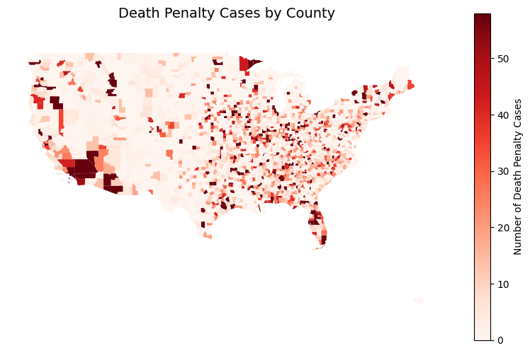
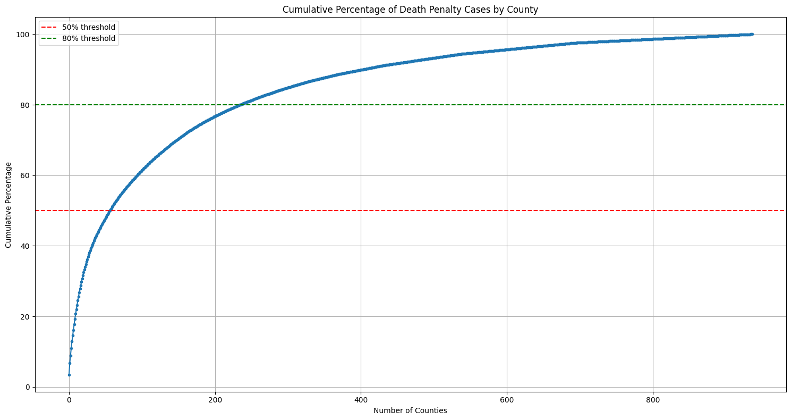
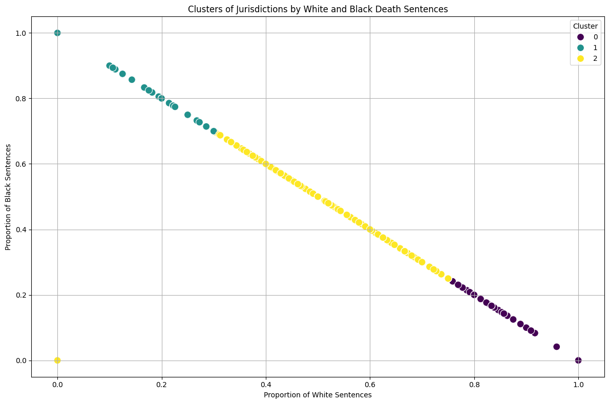

Analyzing Justice: Insights into Fairness and Disparity Regarding the Death Penalty
Final Report
Introduction
This project analyzes different factors associated with the use of the death penalty in the United States. The death penalty has always been controversial, and 23 states have already chosen to abolish it (11 of those just in the last 16 years). It is important to study data associated with controversial subjects such as this because sometimes emotion can override facts. There is not only the victim of the crime to consider but use of the death penalty results in the loss of yet another life, impacting families for generations. Studying death penalty cases and patterns may shed light on whether it’s applied fairly, without introducing opinion or bias.
Objective
The objective of the project is to collect multiple datasets related to the death penalty, clean them, and perform exploratory data analysis to decide which datasets are important to telling the overall story. Once the key datasets have been determined, the objective is to perform different unsupervised and supervised machine learning methods and report on the findings. The focus of the research will be on studying geographical and racial disparities.
Key Findings
To begin exploratory data analysis, I looked at how the death penalty has been instituted and abolished over time. In the early years of the United States, most states did permit its use but as we moved towards and into the 20th century, attitudes were changing. Michigan, Wisconsin, and Maine were the first states to abolish it in the mid to late 1800s. Minnesota followed in 1911 and then not much happened until the late 1950s and 1960s when 6 more states abolished it all relatively close to each other. Two more states followed in the 1980s and then there was a steady stream of 11 states from 2007 to 2023, almost a state a year. This leaves 27 states that still permit its use, but the trend could lead us to believe that as time goes by, more and more states will abolish the death penalty.
Even so, there are still currently over 2,000 inmates on death row and about 30 executions scheduled. Looking at those upcoming executions, we can see that the number from 2024 to 2027 increases almost linearly. When looking more closely, you can see that Ohio significantly exceeds all other states and is the only state with scheduled executions past 2025. This reinforces that while a lot of states have abolished the death penalty, there are still many that are more than comfortable with keeping it implemented.
In considering death row outcomes, it is noted that there have been close to 1,600 executions since the 1970s, while during the same period there have been around 250 exonerations. This indicates that around 10% of cases involve an inmate that was falsely accused, which brings into question the accuracy of the judicial system in the United States. The Innocence Project, founded in 1992, has brought attention to this issue and has been instrumental in freeing over 20 death row inmates, each having served jail time ranging from 5 to 22.5 years.
Sentencing data was then analyzed. Figure 1 shows the geographical differences in where death penalty sentences occur. We can conclude from this analysis that one’s likelihood of receiving a death sentence is not only associated with the state they live in but also seems to be heavily influenced by the boundaries of the over 3,000 counties in the United States, raising the question yet again about the fairness in applying the death penalty.

Figure 1: Geographic distribution of death penalty cases across counties in the United States
As seen in Figure 2, when zooming in from state to county level, a relationship is observed where the counts start very high, decrease rapidly, and then taper off, which is a characteristic of exponential decay. This reveals that a small number of counties dominate the count of death penalty sentences.

Figure 2: Distribution of death penalty sentences across counties
To analyze this further, the cumulative percentage of death penalty cases by county was plotted in Figure 3. Out of the 937 counties that sentenced someone to death, 57 of those counties accounted for 50% of all death penalty sentences. 235 counties accounted for 80% of all cases, which is 25% of all counties.

Figure 3: Cumulative percentage of death penalty cases by county, illustrating that a small fraction of counties accounts for the majority of cases, with thresholds at 50% and 80% marked for reference
From the same dataset, the race of people sentenced to death was studied. It was concluded that White people make up 47.9% of all death penalty sentences, whereas Black people make up 41%, and Latino/a people make up nearly 9%. Other races account for an insignificant number of sentences and were not considered further. Noting that understanding the overall racial demographics within the counties themselves would be important to understand where there are actually disparities, the analysis that follows also considers census information from those same counties. Therefore, since the census population data being used for this project only spans from 2009-2022, Figure 4 shows the proportions of sentencing during that same timeframe.

Figure 4: Racial distribution of death penalty cases by county (2009-2022), with green representing White, blue representing Black, and red representing Latino/a individuals
As you can see, it is apparent that some counties do sentence a disproportionate amount of each race. Many counties, including Dallas, Duval, Hamilton, Montgomery, Philadelphia, Shelby, Jefferson, and Oklahoma were found to disproportionally sentence Black people to death. Comparing these percentages to the population data, we would expect to see the Black-to-White population ratio above 1 in each of these counties, but what we actually see is that Philadelphia and Shelby are the only counties with a ratio barely exceeding 1. These findings show that despite there being as many or more White than Black people in a given county, Black people were sentenced to death more often. This could be due to the fact that Black people commit more violent crimes than White people, or it could be racial discrimination. Another finding was that a single county accounted for 11.2% of all Latino/a deaths nationwide, whereas Black and White sentences are much more evenly distributed across counties.
Digging deeper into the data, we determined how many counties actually disproportionally executed Black people. As can be seen in Figure 5, there are three clusters labeled cluster 0, cluster 1, and cluster 2.

Figure 5: Clusters of jurisdictions based on the proportions of White and Black death sentences
Cluster 0 is purple and represents 352 counties that sentenced people to death at even proportions (50% White and 43% Black). Cluster 1 is blue and represents 175 counties that disproportionally sentence Black people to death (94.1% compared to 5.9%). Cluster 2 is yellow and is the largest representing 408 counties that disproportionally execute White people (97.5% compared to 2.5%). It is interesting that counties who execute Whites more than Blacks represent the largest component of the data, considering that in the earlier analysis we found that White and Black people made up very similar amounts of overall sentencing. To understand why this is occurring, the volume of sentencing was added to the plot as the size of the bubble. Figure 6 indicates that counties that sentence Black people to death disproportionally also have a higher volume of sentencing. Cluster 2 has a lot of counties, but most of them had very few overall sentences. This explains how the total number of Black death sentences can be similar to White death sentences despite fewer sub-jurisdictions.

Figure 6: Bubble plot showing death sentences by race proportions and total volume, with clusters highlighting variations in sentencing patterns and case distributions across jurisdictions
Based on the above, there do seem to be racial disparities in the death penalty, even without considering crime data. Even with crime rates, it would be hard to determine if the crime rates were based on arrests that were also racially fueled. However, it is important to note that according to a case study, “Official record studies consistently show that Blacks exhibit higher levels of involvement in criminal offending than Whites do” (Unknown 2009). On the other hand, when looking at murder (a leading cause of death penalty sentence), it is reported that White people committed 8,842 murders in 2023 while Black people committed 6,405 murders (Department 2024).
Looking at a different dataset and from the opposite perspective, we were able to look at death penalty sentences based on the race of victim in each case. There were a total of 1,149 male victims and 1,107 female victims. Out of the male victims, 862 (75%) were White, 183 (16%) were Black, and 104 (9%) were Latino/a. Out of the female victims, 873 (79%) were White, 175 (16%) were Black, and 59 (5%) were Latino/a. This shows a huge lean towards people receiving the death penalty for killing White individuals.
Some last key findings are that 98.1% of death penalty sentences were given to men, and that people were more likely to get the death penalty in prior years, as seen in Figure 7.

Figure 7: Yearly trend of death penalty cases, showing a peak in the 1990s followed by a steady decline in case frequency over the subsequent decades
Methodology Overview
The methodology encompassed a range of approaches, from simple bar chart visualizations to advanced clustering techniques for analyzing sentence similarities. Key findings were derived using unsupervised learning methods, including K-means clustering and hierarchical clustering. Additionally, geographic maps illustrated the spread of death penalty cases. To enhance analysis, I also employed supervised learning methods such as random forests and decision trees to predict the likelihood of a death penalty verdict based on features like state, race, gender, crime type, and year. Although county-level data was unavailable due to dataset limitations, the models achieved an impressive 98% accuracy, highlighting the predictive power of these features in understanding death penalty outcomes.
Conclusion
The death penalty is very controversial and currently a hot political topic in 2024. With a new administration transitioning into office, we can likely expect to see some shift in sentiment at the highest levels. President Donald Trump rushed a significant number of executions in 2020 just before leaving office (BBC News 2020). People’s lives are at stake and in the hands of the U.S. government and the politicians that represent our many states and counties. Through the research done for this project, disparities were found regarding how, where, and to whom the death penalty is applied. Only 6% of all counties in the United States that issued a death sentence make up 50% of all death sentences. Further, the counties that issue the largest amount of death sentences tend to disproportionally sentence Black people. Gender, and race of the victim of the crime were also considered and found to play a role in whether the person will receive a death sentence. These differences in sentiment raise a question about the fairness of the death penalty. For example, the fact that two people living next to each other but separated by county lines might receive different sentences. Like most things, especially when they regard politics, the death penalty is much more than it seems. Some people think that the death penalty is serving justice, but others feel that the death penalty goes against the very principle of justice. It is important to not be biased when presenting data about such a sensitive topic, and let the story tell itself, as it does in this project.